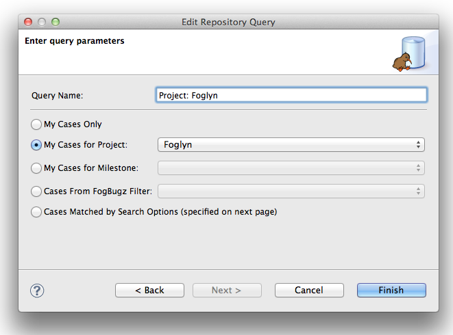
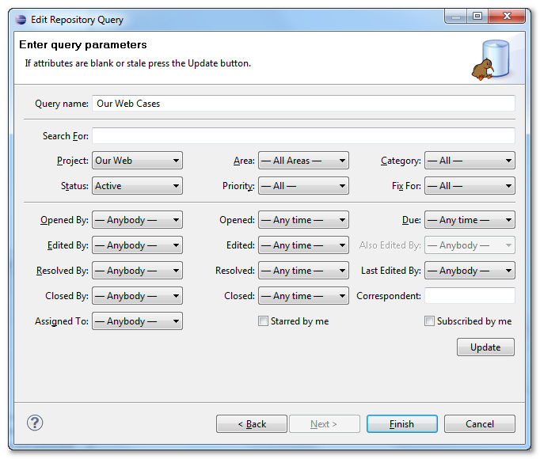

New Query Dialog
When creating new query, you need to select which FogBugz cases will appear in your query. You have several options:
- My Cases — This will match all cases assigned to you
- My Cases for Project — Your cases for given Project
- My Cases for Milestone — Your cases for given Milestone
- Cases From FogBugz Filter — Cases matching the saved filter from FogBugz, as described below.
- Cases Matched by Search Options — Cases matching the search criteria. See Query Based on Search for more details.

Foglyn can use saved FogBugz filter to select cases that will be available in Task List. Each user has at least two predefined filters: Inbox and My Cases. Inbox filter matches all cases created from incoming support email messages, while My Cases filter returns cases assigned to current user. You can create more filters in FogBugz web interface, or you can use filters shared from your colleagues. Note that Foglyn can use only saved filters, i.e. filters with names. Benefit of using filter-based query is that you can easily see the same cases in Task List view and in FogBugz web interface.
Foglyn can also use Advanced Search capabilities of FogBugz to find cases. After you choose “Cases Matched by Search Options”, you are presented with search options. Select search criteria to match cases you’re interested in (e.g. search only Active cases in “Our Web” project), give your query a name (e.g. “Our Web cases”) and press Finish.

Related Topics: